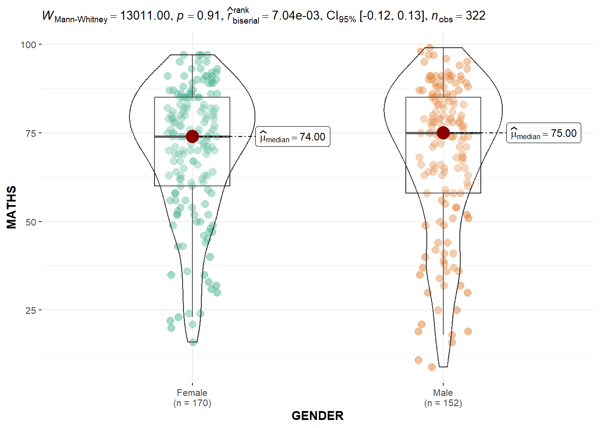
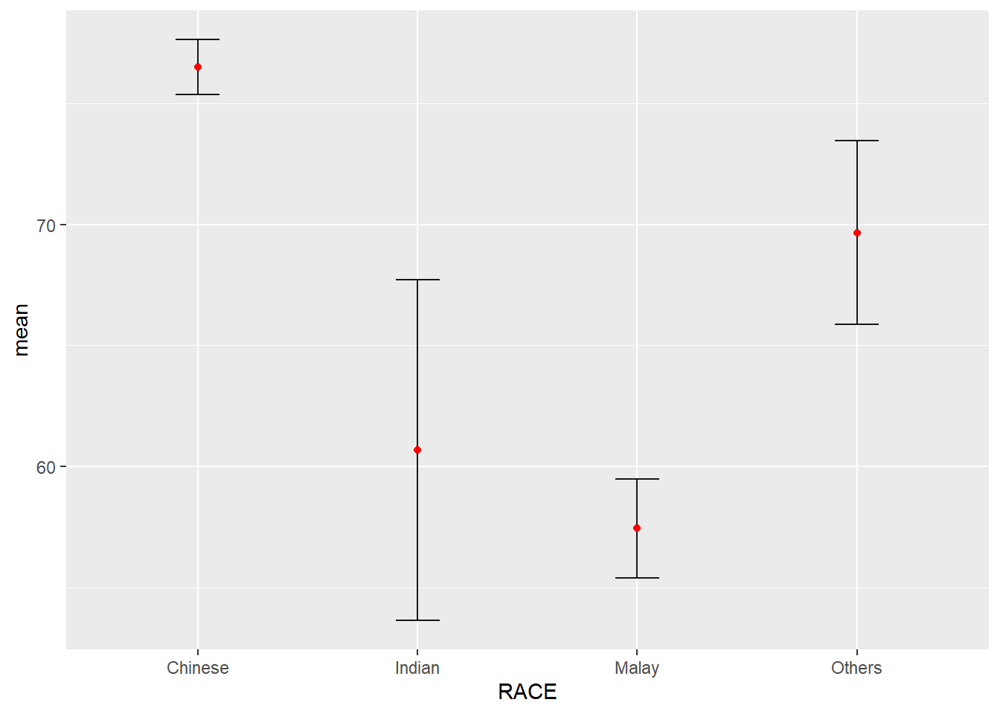

Show the code
pacman::p_load(ggplot2, plotly, readr, tidyverse, DT, patchwork, ggstatsplot, readxl, see, parameters, performance, dplyr)In this In-class exercise, we will explore more interesting packages to visualize data with statistical summary information shown in the plots.
Packages will be used in this exercise are:
plotly
tidyverse
DT
patchwork
ggstatsplot
readr
pacman::p_load(ggplot2, plotly, readr, tidyverse, DT, patchwork, ggstatsplot, readxl, see, parameters, performance, dplyr)Data we will use in this exercise is Exam_data.csv, and we can import the data with codes chunk below.
exam_data<-read_csv("data/Exam_data.csv")Today we are going to explore the function plot_ly() to create an interactive plot.
plot_ly(data = exam_data,
x = ~ENGLISH,
y = ~MATHS,
color = ~RACE)p<-ggplot(data = exam_data,
aes(x = MATHS,
y = ENGLISH)) +
geom_point(dotsize = 1) +
coord_cartesian(xlim = c(0,100),
ylim = c(0,100))
ggplotly(p)ggbetweenstats(
data = exam_data,
x = GENDER,
y = MATHS,
type = "np",
massages = FALSE
)
ggscatterstats(
data = exam_data,
x = MATHS,
y = ENGLISH,
marginal = FALSE
)
car_resale <- read_xls("data/ToyotaCorolla.xls",
"data")
car_resale# A tibble: 1,436 × 38
Id Model Price Age_0…¹ Mfg_M…² Mfg_Y…³ KM Quart…⁴ Weight Guara…⁵
<dbl> <chr> <dbl> <dbl> <dbl> <dbl> <dbl> <dbl> <dbl> <dbl>
1 81 TOYOTA Cor… 18950 25 8 2002 20019 100 1180 3
2 1 TOYOTA Cor… 13500 23 10 2002 46986 210 1165 3
3 2 TOYOTA Cor… 13750 23 10 2002 72937 210 1165 3
4 3 TOYOTA Co… 13950 24 9 2002 41711 210 1165 3
5 4 TOYOTA Cor… 14950 26 7 2002 48000 210 1165 3
6 5 TOYOTA Cor… 13750 30 3 2002 38500 210 1170 3
7 6 TOYOTA Cor… 12950 32 1 2002 61000 210 1170 3
8 7 TOYOTA Co… 16900 27 6 2002 94612 210 1245 3
9 8 TOYOTA Cor… 18600 30 3 2002 75889 210 1245 3
10 44 TOYOTA Cor… 16950 27 6 2002 110404 234 1255 3
# … with 1,426 more rows, 28 more variables: HP_Bin <chr>, CC_bin <chr>,
# Doors <dbl>, Gears <dbl>, Cylinders <dbl>, Fuel_Type <chr>, Color <chr>,
# Met_Color <dbl>, Automatic <dbl>, Mfr_Guarantee <dbl>,
# BOVAG_Guarantee <dbl>, ABS <dbl>, Airbag_1 <dbl>, Airbag_2 <dbl>,
# Airco <dbl>, Automatic_airco <dbl>, Boardcomputer <dbl>, CD_Player <dbl>,
# Central_Lock <dbl>, Powered_Windows <dbl>, Power_Steering <dbl>,
# Radio <dbl>, Mistlamps <dbl>, Sport_Model <dbl>, Backseat_Divider <dbl>, …my_sum<-exam_data%>%
group_by(RACE)%>%
summarise(
n = n(),
mean = mean(MATHS),
sd = sd(MATHS)
)%>%
mutate(se = sd/sqrt(n-1))model<-lm(Price ~ Age_08_04 + Mfg_Year + KM +
Weight + Guarantee_Period, data = car_resale)
model
Call:
lm(formula = Price ~ Age_08_04 + Mfg_Year + KM + Weight + Guarantee_Period,
data = car_resale)
Coefficients:
(Intercept) Age_08_04 Mfg_Year KM
-2.637e+06 -1.409e+01 1.315e+03 -2.323e-02
Weight Guarantee_Period
1.903e+01 2.770e+01 check_c <- check_collinearity(model)
plot(check_c)
ggplot(my_sum) +
geom_errorbar(
aes(x = RACE,
ymin = mean - se,
ymax = mean + se),
width = 0.2,
colour = "black",
alpha = 0.9,
size = 0.5
) +
geom_point(aes(
x = RACE,
y = mean),
stat = "identity",
color = "red",
size = 1.5,
alpha = 1)
model[["coefficients"]] (Intercept) Age_08_04 Mfg_Year KM
-2.636783e+06 -1.409333e+01 1.314938e+03 -2.323290e-02
Weight Guarantee_Period
1.902743e+01 2.769708e+01